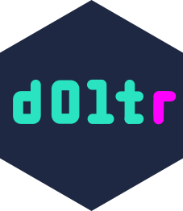

doltr 
doltr is a client for dolt, an SQL database with git-like versioning. It is a work in progress, not fully documented, and the API isn’t fully baked yet.
Installation
You will need dolt installed on your machine. Get it here.
Install the R package with
remotes::install_github("ecohealthalliance/doltr")Usage
The package provides two DBI-compliant drivers to connect to a dolt database. dolt_remote() connects to a dolt server via TCP. dolt_local() connects to a local database directory. (Behind the scenes dolt_local() launches and manages a background server process, which can also be done manually with dolt_server()).
dolt() serves a connection that is cached during the R session and connects via default parameters than can be defined via environment variables. (See ?config).
dolt_pane() Provides an RStudio connection pane showing the database.
A variety of dolt_* functions provide database information and versioning capability. See help files and dolt documentation.
Code of Conduct
Please note that the dolt project is released with a Contributor Code of Conduct. By contributing to this project, you agree to abide by its terms.